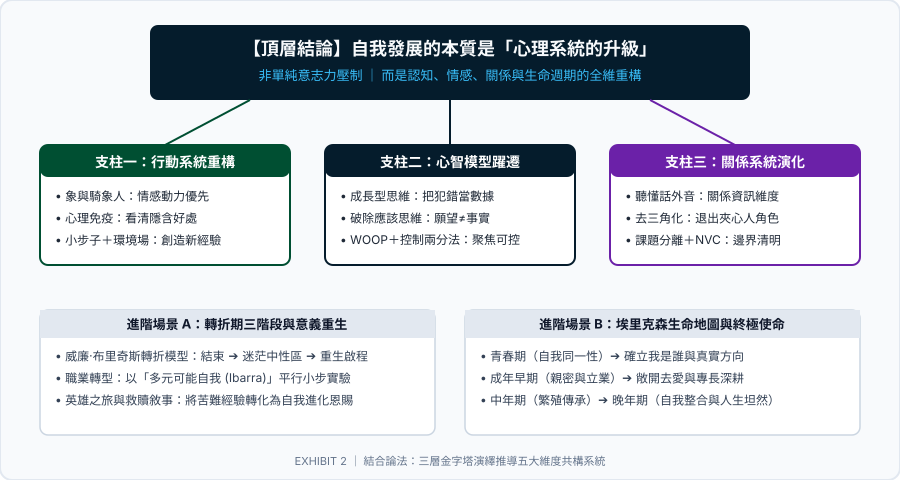

首發旗艦簡報 ｜ 16 頁無雜訊
自我發展心理學：實現人生突破的系統方法
打破「自律不足」的傳統迷思，將人生突破定位為「心理系統全面升級」。 完整收錄大象與騎象人、心理免疫 X 光片、第二序列改變、成長型心智、應該思維瓦解、WOOP 執行意圖、控制兩分法、互補系統、去三角化、課題分離、非暴力溝通、轉折三部曲、多元可能自我與埃里克森生命地圖。
依據頂尖顧問公司（McKinsey 麥肯錫、BCG 波士頓、Accenture 埃森哲）無雜訊簡報規範，深度萃取心理學巨著與心智模型。 雙層認知鷹架設計：為入門者提供生活痛點破解法，為進階者建立系統思考與決策矩陣。
結合論法演繹架構：自我的持續演化由行動重構、心智模型、關係系統、轉折突破至人生使命五大維度層層遞進

標準模組化知識庫設計，支援隨時擴充各心理學派別、名著導讀與專題顧問簡報
打破「自律不足」的傳統迷思，將人生突破定位為「心理系統全面升級」。 完整收錄大象與騎象人、心理免疫 X 光片、第二序列改變、成長型心智、應該思維瓦解、WOOP 執行意圖、控制兩分法、互補系統、去三角化、課題分離、非暴力溝通、轉折三部曲、多元可能自我與埃里克森生命地圖。
融合蘇格拉底式詰問與愛比克泰德斯多葛學派哲學。 教你識破「自動化負面思維 (NATs)」，解構「控制悖論」，在不確定性中劃清心理邊界，重獲內心無堅不摧的寧靜與韌性。
深入解析馬斯勒 (Maslach) 職業倦怠三因素：情緒耗竭、憤世嫉俗與無效感。 提出經典「酸黃瓜比喻」——倦怠不僅是個人問題，更是工作環境醋桶（自主、公正、價值觀契合、回報）與個體間的適配危機。
「一切煩惱皆來自人際關係。」探討阿德勒目的論、課題分離深度實踐、橫向合作關係取代縱向支配，以及自我接納、他者信賴、他者貢獻所構建的共同體感覺。
從「修補心理創傷」邁向「蓬勃繁榮 (Flourishing)」。系統化梳理正向情緒 (P)、全心投入心流 (E)、正向關係 (R)、意義感 (M) 與成就感 (A) 五大支柱。
透視人際行為冰山：討好、指責、超理智與打岔四大生存應對姿態。以「一致性溝通」連結深層渴望，達成真正的自我分化與心靈自由。
根據你當前的生活與工作困境，直接對準最能破局的心理學模型與對應簡報頁
滿腦子都是「世界應該公平、他應該理解我、我不能犯錯」。你正被「應該思維的暴政」綁架，需要用理情反駁法給大腦鬆綁。
直達 Slide 07：瓦解應該思維與 ABC 反駁 →